测试工具 YCSB 的安装
YCSB介绍：YCSB（Yahoo! Cloud Serving Benchmark）是Yahoo开源的一款通用的性能测试工具。可以用于测试多种 NoSQL 产品进行测试。相关说明可以参考 https://github.com/brianfrankcooper/YCSB/wiki.
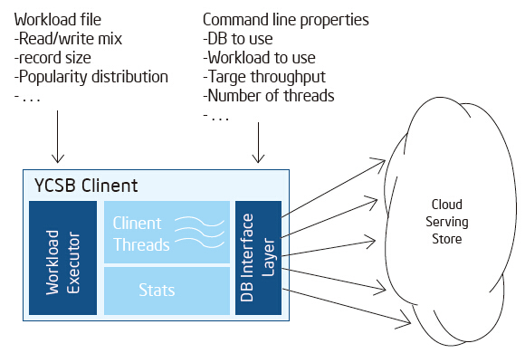
YCSB的工作原理如上图所示，主要的模块包括workload和DB Interface：
Workload：通过配置文件，定义读写比例，数据的大小等DB Interface：通过接口连接并操作各种Cloud Serving Store，也就是各种NoSQL产品包括HBase在内。在运行YCSB的时候，可以配置不同的workload和DB interface，同时可以定义线程数等其他参数。
安装方式一：直接下载已经编译过的程序包
下载地址：https://github.com/downloads/brianfrankcooper/YCSB/ycsb-0.1.4.tar.gz
解压：tar xfvz ycsb-0.1.4
这种方式简单易用。但对于不同的HBase版本，可能会有问题。需要手工编译安装。
安装方式二：源码编译安装
从github下载源码：git clone https://github.com/brianfrankcooper/YCSB.git
配置相应的HBase的版本：修改YCSB/pom.xml，更新hbase.version这个属性。
编译：cd YCSB, mvn install
生成YCSB的程序包：distribution/target/ ycsb-0.1.4.tar.gz
解压：tar xfvz ycsb-0.1.4
1. 测试步骤
a) 配置HBase连接和classpath
最简单的办法是将HBase Server的配置文件{$HBase_home}/conf/hbase-site.xml直接拷贝到YCSB的目录{$YCSB_HOME}/hbase-binding/conf。
将HBase的jar文件拷贝到{$YCSB_HOME} /hbase-binding/lib，这样当执行ycsb命令时，可以保证所需的jar在classpath上。
b) YCSB命令简介
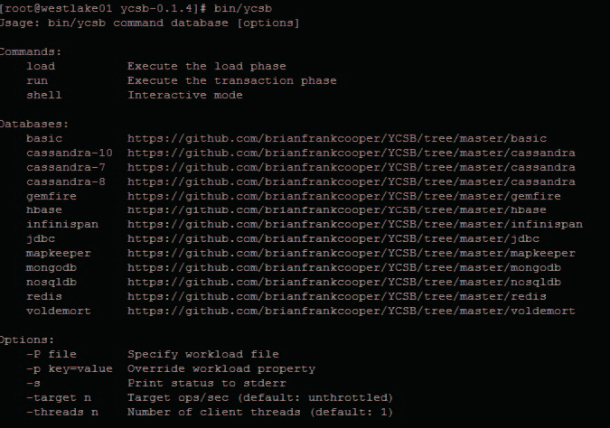
直接执行ycsb命令，可以看到用法的介绍，主要有3类的参数：
Commands：执行什么命令，load-加载数据，run-运行测试，shell-交互模式；
Databases：使用什么DB Interface；
Options：包括属性参数和线程参数。
https://github.com/brianfrankcooper/YCSB/wiki/Core-Properties
参考以上的链接，可以发现workload的核心属性参数。
c) 加载数据
bin/ycsb load hbase -P workloads/workloada -p columnfamily=f1 -p recordcount=10000 -s -threads 10
向HBase Server下的usertable，f1插入10000条数据，并将执行的情况打印到屏幕上。对于HBase数据库，数据是以字节码数组byte[]的方式进行读取，对于不同的数据源，无论是车牌号这种String类型的，还是电子图片这种Binary类型的，在从HBase数据库读取的时候都是以byte[]类型，不同的是数组的长度。
对于一个“京K12345”的车牌，它的长度是8位，对于一个5M左右的图片，它的长度是2326122。我们可以通过workload的核心属性fieldlength来设置。
d) 性能测试
YCSB自带有6中workload配置文件，模拟不同的压力场景
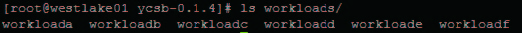
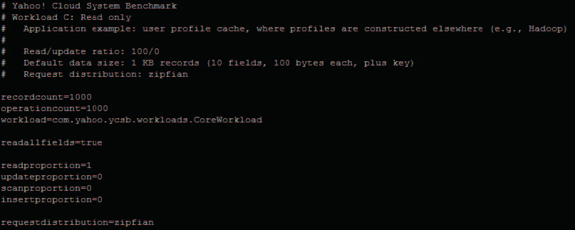
以上是workloadc的内容，模拟的是100% read操作的场景。
bin/ycsb run hbase -P workloads/workloadc -p columnfamily=f1 -s -threads 10
根据workloadc来进行性能测试。
2. 对工具的定制开发和扩展
以上的介绍都是基于YCSB的自带功能。在有些情况下，我们需要扩展和定制测试的方法，YCSB是开源的纯JAVA的解决方案，可以充分满足特殊的要求。下面分析一下YCSB的相关JAVA Class。
a) Workload的定义： com.yahoo.ycsb.workloads.CoreWorkload
b) HBase DB Interface的定义：com.yahoo.ycsb.db.HBaseClient
c) 数据生成器Generator：com.yahoo.ycsb.generator.*
d) YCSB的主程序：com.yahoo.ycsb.Clien
压力测试参数与说明
测试分成两部分，小数据表和大数据表。所谓的大小表示单条记录的大小，测试中，小数据表的单条记录大小为8Byte，大数据表的单条记录大小为2MB。通过YCSB数据库测试工具，我们对数据库的各种操作进行了压力测试，包括read, insert, update, scan以及read-modify-write。这些测试反映了hadoop hbase的性能，同时也对实际应用的操作
进行了模拟。
操作说明：
Read： 读取某一条记录。速度和系统的io速率有关，系统读取速率越快，read速率越快。
Insert：插入一条记录。速度和系统的io速率有关，系统写入速率越快，read速率越快。
Update：更新一条记录，本质和insert操作相同。
Scan：扫描整个表，速率由读取速率和整个表的大小有关，表越大，单次scan速率越慢。
测试环境：
硬件：
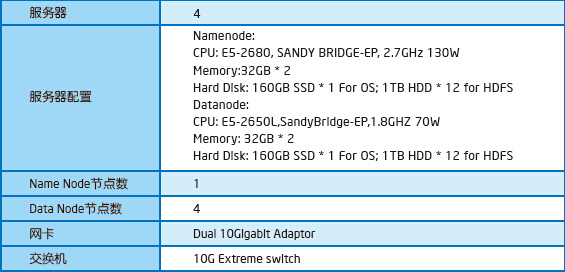
软件：
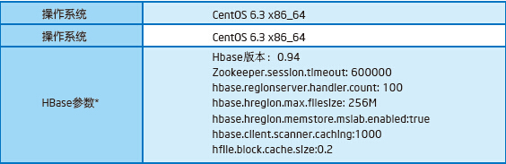
*注：除非文中特别标注， 其他参数均采用 Apache Hadoop 英特尔分发版 2.3 的缺省参数。
YCSB对Apache Hadoop*英特尔分发版测试结果
在以下测试中，我们通过设置不同的线程数，让YCSB客户端模拟不同的压力情况。
小数据表
参数：
单条数据大小（Byte）：8
测试用表总条数：1000000
测试结果：
以下几幅图分别是线程数与执行操作速率的关系图、线程数与单条指令执行时间的关系图以及指令执行时间分布图。执行的操作为50%read，50%update。
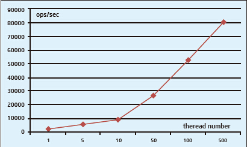
压力（线程）增加对总操作数的影响
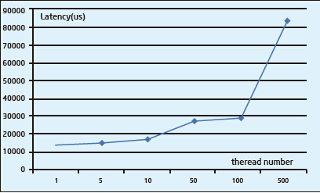
压力（线程）增加对总单条指令执行时间的影响
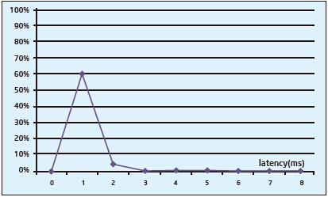
指令执行时间分布
详细测试结果数据表格：
1. Insert操作
2. 50% read, 50% update
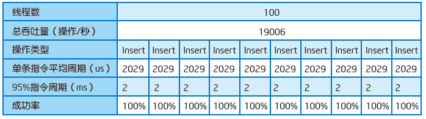
3. 95% read, 5% update
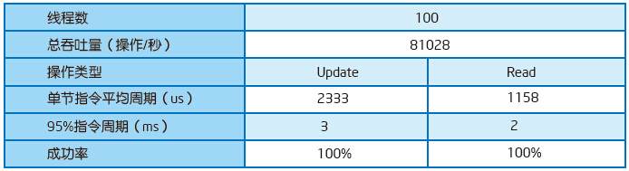
4. 100% read
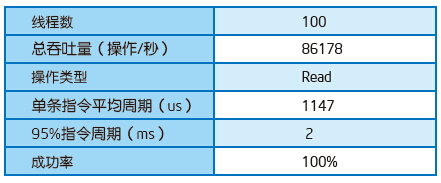
5. 95% read，5% insert
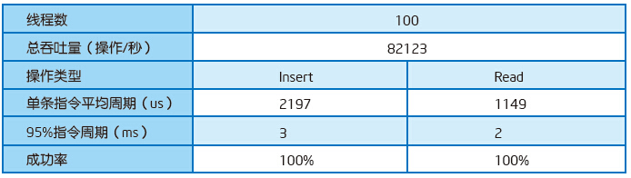
6. 95%scan，5% insert
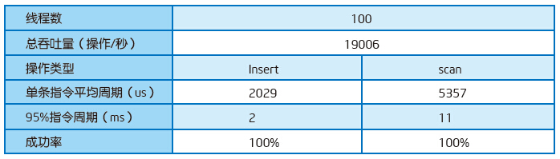
7. 50% read, 50% read-modify-write
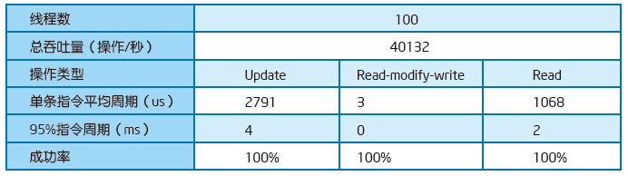
大数据表
参数：
单条数据大小（Byte）：2000000
测试用表总条数：50000
测试结果：
同样，以下几幅图分别是线程数与执行操作速率的关系图、线程数与单条指令执行时间的关系图以及指令执行时间分布图。执行的操作为50%read，50%update。由于单条数据较大，因此和小数据表相比，单条指令执行时间和所有指令执行速率都有明显下降。但系统的总吞吐量有所上升。
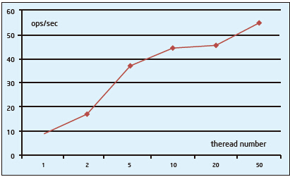
压力（线程）增加对总操作数的影响
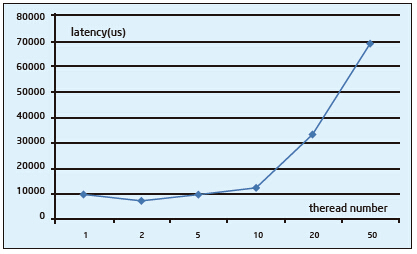
压力（线程）增加对总单条指令执行时间的影响
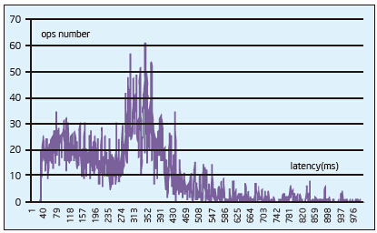
指令执行时间分布
详细测试结果数据表格：
1. Insert操作
2. 50% read, 50% update
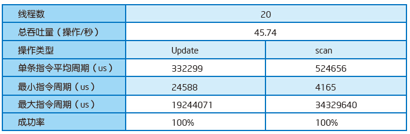
3. 95% read, 5% update
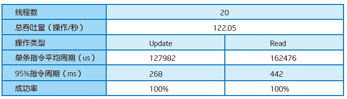
4. 100% read
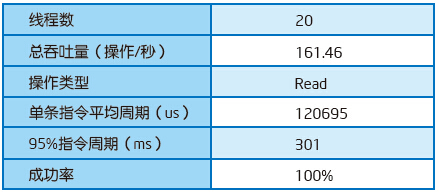
5. 95% read，5% insert
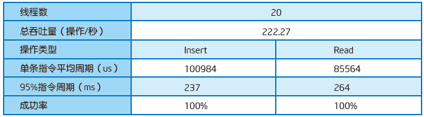
6. 95%scan，5% insert
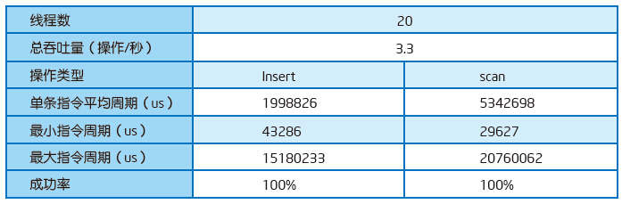
7. 50% read, 50% read-modify-write
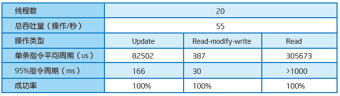
在压力测试中使用的软件，硬件以及测试参数可能为Apache Hadoop*英特尔分发版进行了优化，测试使用的是专用的测试系统，软件，硬件以及平台。上述任何要素的变动都有可能导致测试结果的变化。请参考其他信息及性能测试（包括结合其他产品使用时的运行性能）以对目标产品进行全面评估。